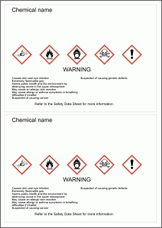
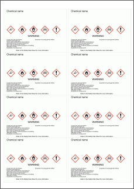

Globally Harmonized System of Classification and Labelling of Chemicals (GHS).
If you are decanting a hazardous chemical neat from the original container then:
- You can search for a substance by chemical name or CAS Number. This search brings up a window of close matches from the GHS Hazardous Chemical Information list.
- Alternatively, you can manually transfer safety information directly from the original label or Safety Data Sheet for the substance into the form fields.
- Preview the label. If OK you can save it for printing later. Labels can be printed onto Avery stickers.
- For diluted substances you will need to calculate the classification based on the cut-off concentrations
Based on Model Code of Practice - Labelling of Workplace Hazardous Chemicals

Two GHS labels per A4 page can
be printed onto Avery L7168 labels.
Two GHS labels per A4 page can
be printed onto Avery L7168 labels.

Eight GHS labels per A4 page can
be printed onto Avery L7165 labels.
Eight GHS labels per A4 page can
be printed onto Avery L7165 labels.
If you are making up a substance (e.g. diluting original chemical with water) you will first need to reclassify the mixture before labelling. This will give you different signal word, hazard pictograms and hazard statements. Then you can use the label creator based on the new classification. Information on classifying mixtures is on the Chemical Safety webpage.